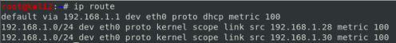
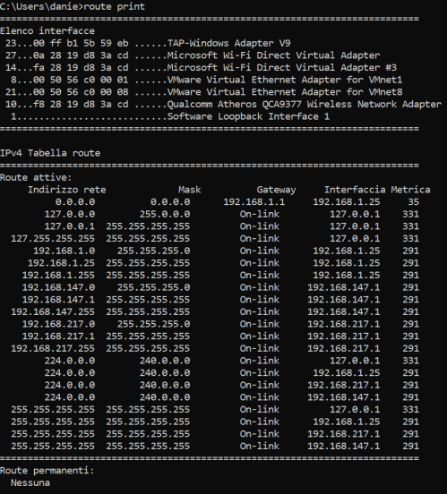
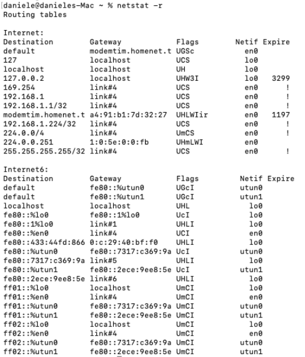

routing metric
because for reach a destination there could be more than a way, the routing protocol assign a
metric to each link.
more
link make a
routeThis metric is a value that rappresent how much is fast the link(estimated bandwidth and congestion)
How to check the routing table:
on Linux:
on Windows
on OSX:
